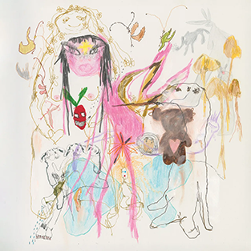
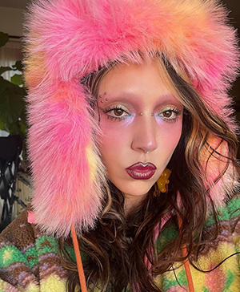
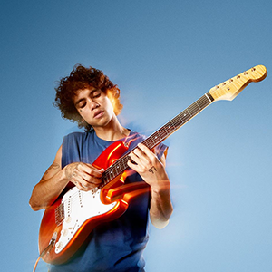

Bea is one of my favorite musicians. She is one of my biggest inspirations due to the way she is completely and utterly herself, through her saesthetic, fashion her music, or even her sexuality. Below is the album art from her most recent album: Beatopia.
Syd is a celebrity and influencer makeup artist, most popularly known on instagram. She's one of my inspirations for her ability to break makeup norms, by using fun vibrant colors at high profile events, and get away with it. She's also one of my fashion inspirations, I love the way she matches her outfits to her makeup.
Lastly, Dominic is another one of my favorite musicians. He inspires me for his ability to overcome, and be vocal about his issues ex. addiction, jailtime... in order to help other people.
